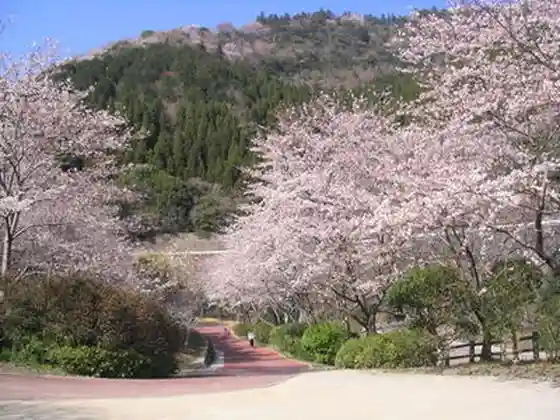
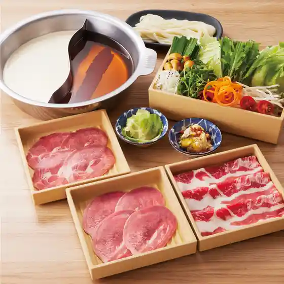
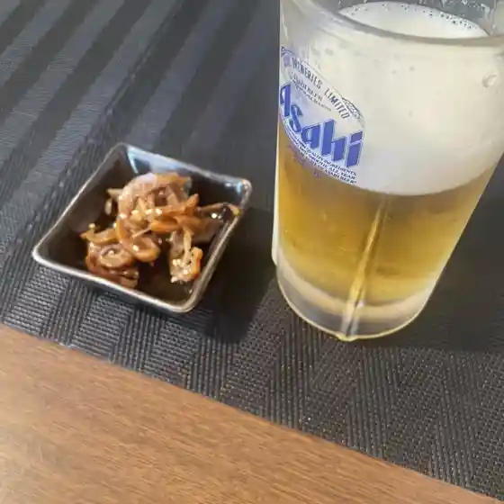
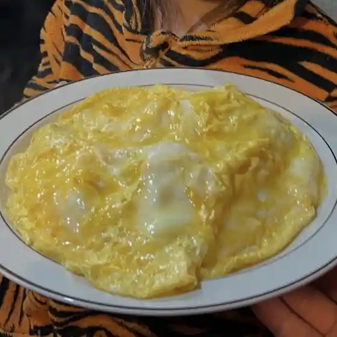
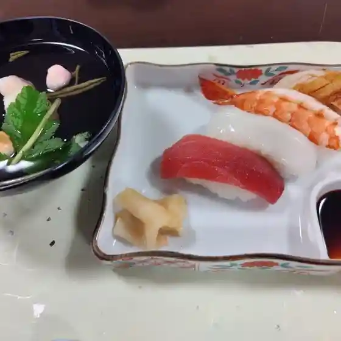
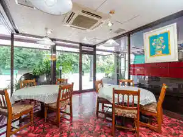

Tsukumi
Tsukumi · Oita
Tsukumi
Highlighted on the Oita map.
Sights
Umitama Taiken Park Tsukumi Iruka Shima
Shi Ura Peninsula no Kawazu Sakura
Ho Toshima
Aoe Dam (Cherry Blossoms)

cafe Nabe
Florist Takano
Tsukumin Park
Otomo Sorin Bochi Park
Ajiro Shima (Ajirojima)
JA no Zomi City Ba Dandan
Maguro Ryori no Meiten
Shi Ura Lookout (Yoratembodai)
Donnamondai Umierutsukuminchi
Semento Kojogun Semento Sangyo Semento Town
Takahama Beach
Kan Moto Kaikyo
Tsukumi Eki (Nagori Yuki Ise Shozo Kahi Otomo Sorin Ko Zo)
Ho Toshima (Tsukumi Minato)
Tsukumi Yakusho
Dining
しゃぶしゃぶ温野菜 大分津久見店
Shabushabu Onyasai Ooita Tsukumi Mise

あそう
Asou
e～Lunch
E ~ Lunch

海鮮瓦焼き 亀吉
Kaisen Kawara Yaki Kamekichi

居酒らとらの子１９５７
Kyo Sake Ratorano Ko 1 9 5 7

ニューポート
Nyuupooto

割烹津港
Kappou Tsu Minato

三幸寿司
Mitsuyuki Sushi

Unique
Unique
まるい食堂
Marui Shokudou
四季彩源兵衛
Shiki Sai Genbee
酒房のっけ
Sake Bou Nokke
大谷菓子舗
Ootani Kashi Ho
豆が辻
Mame Ga Tsuji
HOTOJIMA海道
Hotojima Kaidou
ジョイフル 津久見店
Joifuru Tsukumi Mise
いさり火
Isari Hi
太田商店
Oota Shouten
旬彩 湯木
Jun Sai Yuki
ガレ
Gare
来来
Rairai
たまちゃん
Tamachan
ベーカーシェフ 津久見店
Beekaashiefu Tsukumi Mise
ほっともっと 津久見駅前店
Hottomotto Tsukumi Ekimae Mise
Open caffe 桜
Open Caffe Sakura
食事＆喫茶 かず
Shokuji & Kissa Kazu
ポッポおじさんの大分からあげ 津久見店
Poppo Ojisanno Ooita Karaage Tsukumi Mise
かくれん坊
Kakuren Bou
NOMADE GARDEN
Nomade Garden
魚仙
Sakana Sen
すいかじ
Suikaji
うみえーる つくみんち
Umieeru Tsukuminchi
お菓子の菊家 津久見店
O Kashi No Kiku Ie Tsukumi Mise
カフェ・ド・エスプリ
Kafe・Do・Esupuri
ミュージックカフェリヴァイブ
Myuujikkukaferivaibu
平和台
Heiwadai
料理工房 竹田
Ryouri Koubou Takeda
セブンイレブン 津久見松崎
Sebun'Irebun Tsukumi Matsuzaki
こたけ食堂
Kotake Shokudou
寿司富久
Sushi Fuku
八ちゃん堂 千怒崎店
Yachi Yan Dou Sen Do Saki Mise
とりあん 津久見店
Torian Tsukumi Mise
汐の音
Shio No Oto
Le monde de Karen
Le Monde De Karen
セメント町かやく舎
Semento Machi Kayaku Sha
優曇華
Udon Hana
居酒屋 高槻
Izakaya Takatsuki
つくみマルシェ
Tsukumi Marushie
花茶
Hanacha
千成
Sennari
橘
Tachibana
八ちゃん堂 津久見店
Yachi Yan Dou Tsukumi Mise
割烹かわ村
Kappou Kawa Mura
味好園
Aji Kou Sono
新美賀久寿司
Niimi Ga Kyuuju Tsukasa
ミルキーウェイ
Mirukiiuei
とく盛り弁当
Toku Mori Bentou
空カフェ
Sora Kafe
喜伴
Ki Han
ジビエの里
Jibie No Sato
Umieru Tsukuminchi Tsukumi Oita Prefecture Kyushu
Umieru Tsukuminchi Tsukumi Oita Prefecture Kyushu
Umieru Tsukuminchi Tsukumi Oita Prefecture Kyushu
Umieru Tsukuminchi Tsukumi Oita Prefecture Kyushu
Umieru Tsukuminchi Tsukumi Oita Prefecture Kyushu
Umieru Tsukuminchi Tsukumi Oita Prefecture Kyushu
Umieru Tsukuminchi Tsukumi Oita Prefecture Kyushu
Umieru Tsukuminchi Tsukumi Oita Prefecture Kyushu
Hamachaya Tsukumi Oita Prefecture Kyushu
Hamachaya Tsukumi Oita Prefecture Kyushu
Hamachaya Tsukumi Oita Prefecture Kyushu
Hamachaya Tsukumi Oita Prefecture Kyushu
Hamachaya Tsukumi Oita Prefecture Kyushu
Hamachaya Tsukumi Oita Prefecture Kyushu
Hamachaya Tsukumi Oita Prefecture Kyushu
Hamachaya Tsukumi Oita Prefecture Kyushu
Shikisai Genbe Tsukumi Oita Prefecture Kyushu
Shikisai Genbe Tsukumi Oita Prefecture Kyushu
Shikisai Genbe Tsukumi Oita Prefecture Kyushu
Shikisai Genbe Tsukumi Oita Prefecture Kyushu
Shikisai Genbe Tsukumi Oita Prefecture Kyushu
Shikisai Genbe Tsukumi Oita Prefecture Kyushu
Shikisai Genbe Tsukumi Oita Prefecture Kyushu
Shikisai Genbe Tsukumi Oita Prefecture Kyushu
Joyfull Tsukumi Oita Prefecture Kyushu
Joyfull Tsukumi Oita Prefecture Kyushu
Joyfull Tsukumi Oita Prefecture Kyushu
Joyfull Tsukumi Oita Prefecture Kyushu
Joyfull Tsukumi Oita Prefecture Kyushu
Joyfull Tsukumi Oita Prefecture Kyushu
Joyfull Tsukumi Oita Prefecture Kyushu
Joyfull Tsukumi Oita Prefecture Kyushu
Tsukumi Marche Tsukumi Oita Prefecture Kyushu
Tsukumi Marche Tsukumi Oita Prefecture Kyushu
Tsukumi Marche Tsukumi Oita Prefecture Kyushu
Tsukumi Marche Tsukumi Oita Prefecture Kyushu
Tsukumi Marche Tsukumi Oita Prefecture Kyushu
Tsukumi Marche Tsukumi Oita Prefecture Kyushu
Tsukumi Marche Tsukumi Oita Prefecture Kyushu
Tsukumi Marche Tsukumi Oita Prefecture Kyushu
Sumibiyaki Kamekichi Tsukumi Oita Prefecture Kyushu
Sumibiyaki Kamekichi Tsukumi Oita Prefecture Kyushu
Sumibiyaki Kamekichi Tsukumi Oita Prefecture Kyushu
Sumibiyaki Kamekichi Tsukumi Oita Prefecture Kyushu
Sumibiyaki Kamekichi Tsukumi Oita Prefecture Kyushu
Sumibiyaki Kamekichi Tsukumi Oita Prefecture Kyushu
Sumibiyaki Kamekichi Tsukumi Oita Prefecture Kyushu
Sumibiyaki Kamekichi Tsukumi Oita Prefecture Kyushu
Ogawa Fish Restaurant Tsukumi Oita Prefecture Kyushu
Ogawa Fish Restaurant Tsukumi Oita Prefecture Kyushu
Ogawa Fish Restaurant Tsukumi Oita Prefecture Kyushu
Ogawa Fish Restaurant Tsukumi Oita Prefecture Kyushu
Ogawa Fish Restaurant Tsukumi Oita Prefecture Kyushu
Ogawa Fish Restaurant Tsukumi Oita Prefecture Kyushu
Ogawa Fish Restaurant Tsukumi Oita Prefecture Kyushu
Ogawa Fish Restaurant Tsukumi Oita Prefecture Kyushu
China Restaurant Hanacha Tsukumi Oita Prefecture Kyushu
China Restaurant Hanacha Tsukumi Oita Prefecture Kyushu
China Restaurant Hanacha Tsukumi Oita Prefecture Kyushu
China Restaurant Hanacha Tsukumi Oita Prefecture Kyushu
China Restaurant Hanacha Tsukumi Oita Prefecture Kyushu
China Restaurant Hanacha Tsukumi Oita Prefecture Kyushu
China Restaurant Hanacha Tsukumi Oita Prefecture Kyushu
China Restaurant Hanacha Tsukumi Oita Prefecture Kyushu
Heiwadai Tsukumi Oita Prefecture Kyushu
Heiwadai Tsukumi Oita Prefecture Kyushu
Heiwadai Tsukumi Oita Prefecture Kyushu
Heiwadai Tsukumi Oita Prefecture Kyushu
Heiwadai Tsukumi Oita Prefecture Kyushu
Heiwadai Tsukumi Oita Prefecture Kyushu
Shionooto Tsukumi Oita Prefecture Kyushu
Shionooto Tsukumi Oita Prefecture Kyushu
Shionooto Tsukumi Oita Prefecture Kyushu
Shionooto Tsukumi Oita Prefecture Kyushu
Shionooto Tsukumi Oita Prefecture Kyushu
Shionooto Tsukumi Oita Prefecture Kyushu
Shionooto Tsukumi Oita Prefecture Kyushu
Shionooto Tsukumi Oita Prefecture Kyushu
New Ebisu Tsukumi Oita Prefecture Kyushu
New Ebisu Tsukumi Oita Prefecture Kyushu
Stay
HOTEL AZ 大分津久見店
Hotel Az Ooita Tsukumi Mise

ビジネスホテル久月
Bijinesuhoteru Kyuu Gatsu
